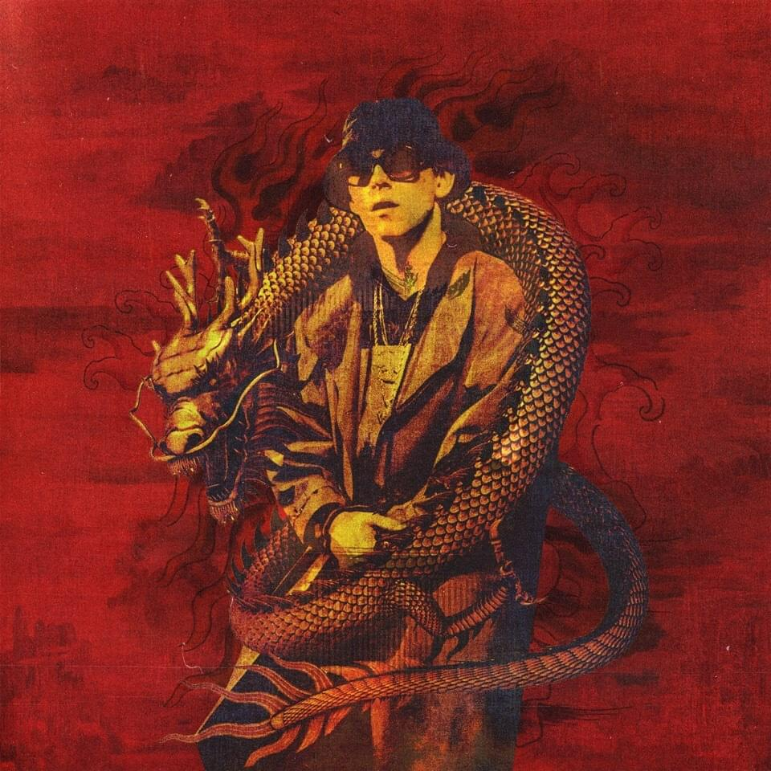
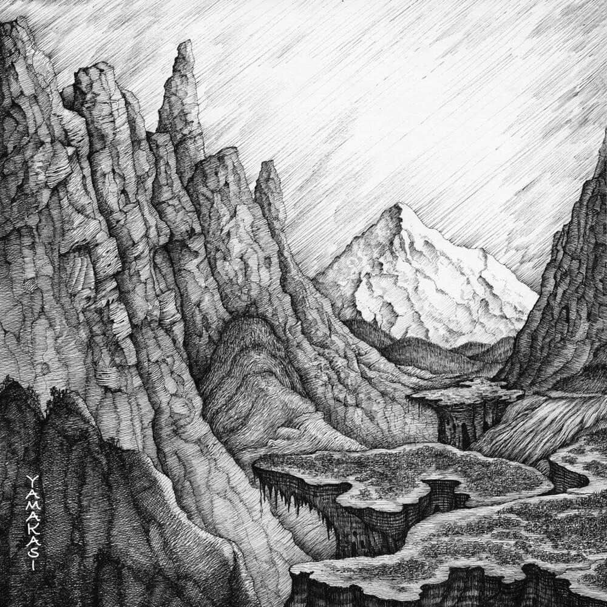

Хип-хоп

Альбом DRAGONBORN (BIG BABY TAPE) набрал более 168 миллиона прослушиваний. DRAGONBORN занимает 15-е место по прослушиваниям в Spotify среди альбомов русскоязычных исполнителей и 3-е место в VK Music в списке самых прослушиваемых официальных плейлистов. Альбом дал пример нового звучания и по этому так завирусился.

Альбом ЛЕГЕНДАРНАЯ ПЫЛЬ (MORGENSHTERN) набрал более 143 миллиона прослушиваний. ЛЕГЕНДАРНАЯ ПЫЛЬ занимает 31-е место по прослушиваниям в Spotify среди альбомов русскоязычных исполнителей и 2-е место в VK Music в списке самых прослушиваемых официальных плейлистов. Из-за маркетингового хода альбом стал очень популярен, но не сморя на это многим он пришёлся ко слуху.

Альбом YAMAKASI (MIYAGI & ANDY PANDA / ЭНДШПИЛЬ) набрал более 141 миллиона прослушиваний. YAMAKASI занимает 7-е место по прослушиваниям в Spotify среди альбомов русскоязычных исполнителей и 7-е место в VK Music в списке самых прослушиваемых официальных плейлистов. Звучит почти везде. Душевная музыка на все времена.

12 августа 2022 года вышел студийный альбом AA Language, спродюсированный Aarne с вокалом Федука, Bushido Zho, Anikv, Моргенштерна, Big Baby Tape, Mayot, Markul, Элджей, Lil Krystalll, Lil Keed, Mykko Montana, Yanix, Seemee, Obladaet, Slava Marlow, The Limba, Платина и Blago White. Альбом возглавил чарт Apple Music, трек «Тесно» занял первую позицию чарта, а также в топ-10 вошли треки «Больно», «Фиеста», «Ski Ski» и «Дискорд». Новое звучание. Все треки рекомендуются к прослушиванию. P. S. Недавно состоялся релиз второй части альбома с другими истолнителями.

Альбом ONE MORE CITY (ЛСП) набрал более 53 миллиона прослушиваний. ONE MORE CITY занимает 66-е место по прослушиваниям в Spotify среди альбомов русскоязычных исполнителей и 39-е место в VK Music в списке самых прослушиваемых официальных плейлистов. У исполнителя также есть не менее известные альбомы, возможно даже известнее чем рекомендуемый. Но это не мешает ознакомится со всем творчеством исполнителя, так как его исполнение в своей полноте душевное и цепляющее, а вокальная составляющая великолепная.

Альбом КРИВОЙ ЭФИР (ATL) набрал более 46 с половиной миллиона прослушиваний. КРИВОЙ ЭФИР занимает 118-е место по прослушиваниям в Spotify среди альбомов русскоязычных исполнителей и 38-е место в VK Music в списке самых прослушиваемых официальных плейлистов. Исполнитель начал набирать после альбома "Марабу". Филигранно использует метафоры, для рассуждения на разные темы, чаще всего щипятильные. Подача необычная, своеобразная. Рекомендуется к прослушиванию не только этого альбома, но и таких альбомов как "Лимб" и "Радио апокалипсис".